Quick Start：Creating your first game
The document you are reading now includes systematic introductions of the editor panel, functions and workflows of Cocos Creator. However, if you want to quickly learn the general flow and method of developing games by Cocos Creator, this chapter will meet your needs. After finishing the tutorial in this chapter, you might obtain enough information for creating games. But we still recommend you to continue reading this guide to understand the details of each functional block and the complete workflows.
Now, let's begin! Following the tutorial, we will create a deceiving game that is named Pick Up the Stars. Players of this game need to manipulate an obtuse monster that never stops jumping to touch the continuously appearing stars. The dazzling acceleration will bring great challenges to players. Play with your friends and see who can obtain the most stars!
The completed form of this game can be experienced here:
http://fbdemos.avosapps.com/star-catcher/
Prepare project and resources
We have prepared for you all the resources needed for creating this game. Download Original Project and decompress it to the location you want. Then we can start:
You can also download the completed project. If there is any confusion when following the tutorial to create the game, you can open the completed project for reference:
Download the completed project
Open the original project
If you still don't know how to obtain and start Cocos Creator, please read the Install section.
- Firstly, start Cocos Creator, and choose Open other projects
- In the pop up input field for selecting folder, choose
start_projectthat has just been downloaded and decompressed, and click the Open button - The main window of Cocos Creator editor will be opened, and you will see the project status as follows
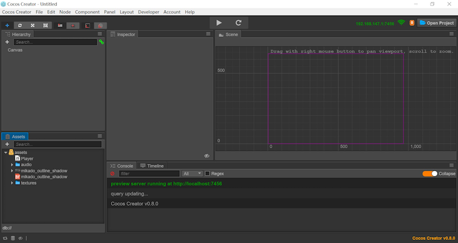
Check game resources
Our original project has included all the game resources needed; therefore, you don't need to import any other resources. For details on importing resources, please read content related to Asset Workflow.
Next, let's get to know the resources of the project. Please pay attention to a panel named Assets, on which all the resource allocation graphs of the project are shown.
We can see that the root directory of the project resources is named as assets, which is in accordance with the assets directory in the decompressed original project. Only resources under this directory can be imported by Cocos Creator into the project and be managed.
The Assets panel can display the directory structure of any hierarchy. An icon like represents a folder. Clicking the triangle icon on the left side of the folder, you can unfold the contents of the folder. After completely unfolding the folder, the Assets panel will present itself as illustrated below.
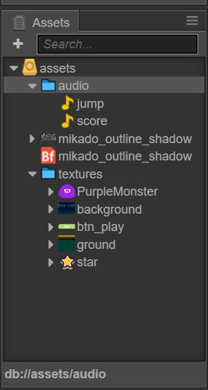
Every resource is a document, which, after being imported into the project, will be recognized as different types of resources according to the differences in extension name. Its icon will be differentiated too. Next, let's take a look at the respective types and usages of the resources in the project.
- audio document, which is an mp3 document generally. Audio documents named as
jumpandscorewill be played respectively when the character jumps and scores.  bitmap font, which is jointly formed by a fnt document and png document. Bitmap font is a commonly used font resource in game development. For detailed information, please read Font
bitmap font, which is jointly formed by a fnt document and png document. Bitmap font is a commonly used font resource in game development. For detailed information, please read Font- There are various kinds of abbreviated icons, all of which are image resources, normally a png or jpg document. After being imported into the project, the image document will be crudely processed into the resource of texture type. Then these resources can be dragged into scenes or component properties for use.
Creating a game scene
In Cocos Creator, the game scene is the core of organizing the game contents when developing games, which is also the carrier for all the game contents presented to players. The game scene will normally include the following contents:
- Scene images and words (Sprite, Label)
- Characters
- Game logic scripts attached to scene nodes in the form of components
When players run the game, the game scene will be loaded. After that, the game scripts of included components will automatically run to realize various kinds of logic functions set up by developers. Therefore, apart from resources, the game scene is the foundation of all content creation. Now let's create a new scene.
- Click the assets directory in the Assets panel, making sure the scene will be created under this directory
- Click the plus sign on the top left corner of the Assets panel, and choose Scene in the pop up menu

- We created a scene document named as
New Scene. Right click it and choose Rename to rename it asgame. - Double click
gameand the scene will be opened in the scene editor and the Node Tree.
To understand Canvas
After opening the scene, all the nodes (and their hierarchical relations) of the current scene will be shown in the the Node Tree. The newly created scene has only one node called Canvas. Canvas can be called the canvas node or rendering root node. Click Canvas, its properties will display in the Properties panel.

The Design Resolution property here stipulates the design resolution of the game. Fit Height and Fit Width stipulate how we should zoom Canvas to adjust to different resolutions when running on screens of different sizes.
Being provided with the function of adjusting to different resolutions, we will normally put all the nodes in charge of image display in the scene under Canvas. In this way, when the scale property of Canvas changes, all the images, as its subnodes, will zoom together to adjust to the sizes of different screens.
For more detailed information, please read Canvas. Currently, we only need to know that the scene images added next will all be put under the Canvas node.
Setting up a scene image
Adding a background
First, find the background image resource according to the path of assets/textures/background in the Assets panel. Click and drag this resource to the Canvas node in Arrangement editor. Don't release the mouse until the Canvas node is highlighted orange, which means a subnode using background as the image resource will be added.

Now you can release the mouse button, and you will see a node named background has been added under Canvas. When we use the way of dragging a resource to add a node, the node will be automatically named as the name of the image resource.
When we edit and modify the scene, we can promptly save our modifications by main menu document->save scene. Or we can save by shortcut keys: Ctrl+S（Windows）or Cmd + S（Mac）.
Modify background size

In scene editor, the newly added background images can be seen. Next we will modify the size of the background image to make it cover the whole screen.
Firstly, click the background node, and click the fourth rectangle tool at the top left corner of the main window:

By using this tool we can conveniently modify the size of the image node. Move the mouse to rest on the left side of background in scene editor, click and drag it to the left until the left side of background exceeds the blue frame that represents the design resolution. Then we can drag the right side of background to the right using the same method.
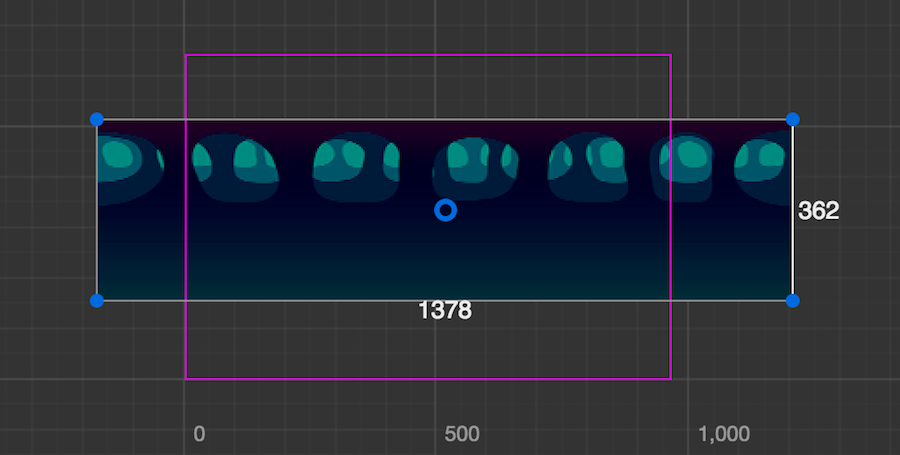
Then we need to drag the upper and lower sides to make the size of the background image fully cover the frame of the designing resolution.
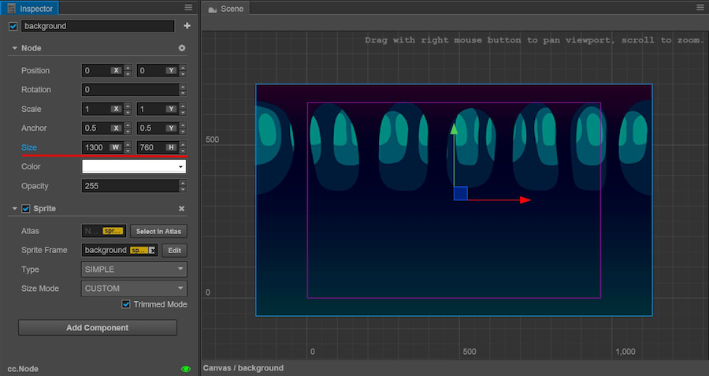
When using rectangle tool to modify the size of the background image, we can see the Size property of Node in the Properties panel is changing accordingly. After completion, the size of the background image is approximately (1360, 760). You can also directly input a numeric value into the input field of the Size property, which will achieve the same effect as that of using rectangle tool. A background image of this size can cover the whole screen of all the phones on the market, with no exceptions.
Add ground
Our main character needs a ground that it can jump on. We will add one instantly. By the same method of adding a background image, drag the assets/textures/ground resource in the Assets panel to Canvas in the Node Tree. When dragging, we can choose the order relation of newly added nodes and background nodes. When in the state of dragging the resource, move the mouse pointer to the bottom of the background node until a highlighted orange frame appears on Canvas and a green line representing the insert position appears below background, and then release the mouse. In this way, ground will be put under the background in the scene hierarchy, which is also a subnode of Canvas.
In the Node Tree, the render order of nodes shown below will follow that of nodes shown above. We can see the ground object at the bottom is the first to appear in scene editor. Besides, the subnode will permanently display before the parent node. We can adjust the hierarchical order and relation of nodes at anytime to control their show order.
According to the method of modifying the background, we can also use rectangle tool to set a suitable size for the ground node. When activating rectangle tool, by dragging the vertices and the parts other than the four sides of nodes, we can change the position of nodes. The state of set ground nodes is as illustrated below:
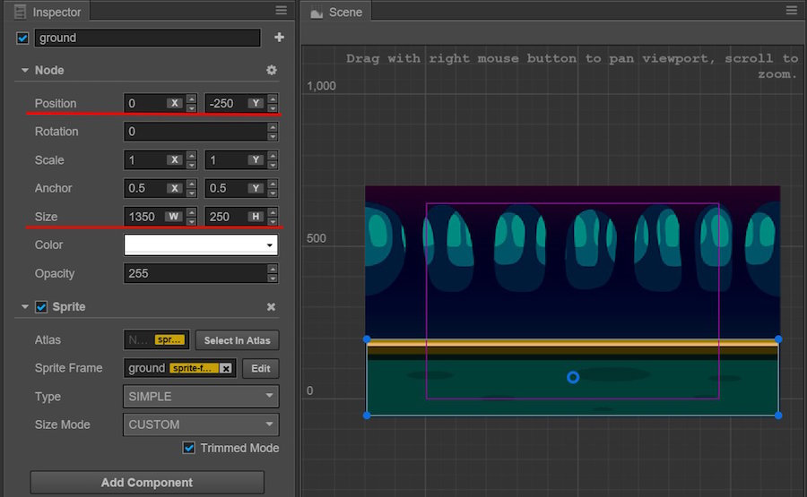
Apart from rectangle tool, we can also use move tool  to change the positions of the nodes. Try to hold down the arrow of move tool shown on the node and drag it, then we can change the position of the node on a single coordinate axis at one time.
to change the positions of the nodes. Try to hold down the arrow of move tool shown on the node and drag it, then we can change the position of the node on a single coordinate axis at one time.
When setting up the position and size of the background and ground, we don't need precise numeric values and can drag them by guessing. If you prefer whole numbers, you can directly input numeric values of position and size according to the screenshot.
Adding a main character
Next our main character the little monster will make its debut. Drag assets/texture/PurpleMonster from the Assets panel and put it under Canvas in the Node Tree, and make sure its position is below ground, in this way our main character will be shown at the very front.
To highlight the aura of the main character in the scene nodes, we right click the newly added PurpleMonster node, choose rename and rename it as Player.
Next we will set up the properties of the main character. First, we change the position of Anchor. The anchor point of any node will be at the center of itself by default, which means the position of the center of the node is the position of the node. We hope to manipulate the position of the base of the main character to simulate the effect of jumping on the ground; therefore, we need to set up the anchor point of the main character under its foot now. Find Anchor property in the Properties panel and set up the value of y as 0. We will see that in scene editor, the arrow of the move tool that represents the position of the main character appears under the foot of the main character.
Next, drag Player from scene editor and put it on the ground. The effect is as illustrated below:
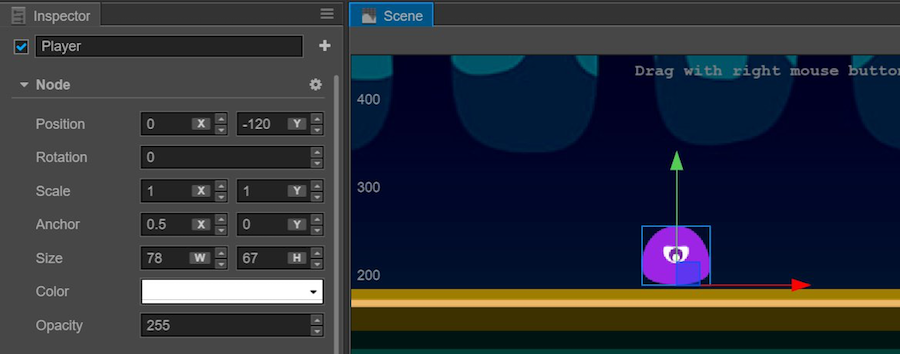
In this way our scene's basic artistic content is set up. In the next section we will write code to vivify the contents of the game.
Writing the main character's script
One of the core ideas of developing games by Cocos Creator is to let the content creation and function development undergo parallel cooperation smoothly. In the last section we focused on artistic content. Next we will write script to develop the flow of functions, and we will see that the finished program script can be used by content creators easily.
Even if you have never written a program before, there's no need to worry. We will provide all the necessary codes in the tutorial. You only need to copy and paste them to the correct position. Then in this part you can ask your programmer partners for help. Next let's start creating script that drives the main character to act.
Create script
- First, right click the
assetsfolder in the Assets panel and chooseCreate->folder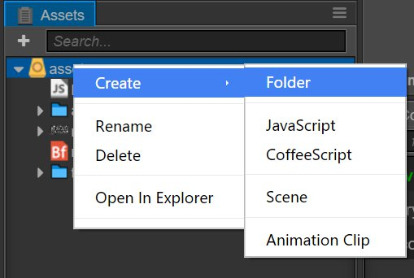 - Right click
New Folder, chooseRenameand rename it asscripts, under which all our scripts will be saved. - Right click the
scriptsfolder, chooseCreate->JavaScriptand create a JavaScript script - Rename the newly created script as
Player. Double click this script and open the code editor.
Writing component property
The opened script already has some preset code blocks. These codes are the structure needed for writing a component script. Scripts of such a structure are the components in Cocos creator, which can be mounted on the nodes in the scene and provide various functions that manipulate nodes. First, we will set up some properties and see how to adjust them in the scene.
Find the portion of properties in the Player script in code editor, change it to the following content and press Ctrl + S（Windows）or Cmd + S（Mac）to save it:
// Player.js
//...
properties: {
// main character's jump height
jumpHeight: 0,
// main character's jump duration
jumpDuration: 0,
// maximal movement speed
maxMoveSpeed: 0,
// acceleration
accel: 0,
},
//...
These newly added properties will stipulate the movement of the main character. In code, we don't have to care about how much these numeric values are, because we will directly set up these numeric values in the Properties panel later.
Now we can add the Player component to the node of the main character. Choose the Player node in the Node Tree, click the add component button in the Properties panel and choose add user's script component->Player to add the Player component to the node of the main character.
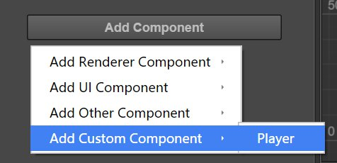
Now we can see the newly added Player component in the Properties panel of the Player node. Set up properties related to the jumping and movement of the main character according to the image below:

Only jumpDuration's unit is seconds. The unit of the other values is pixels. According to the current setting of the Player component: Our main character will have a jump height of 200 pixels. The time needed for jumping to the highest point is 0.3 seconds. Its maximum horizontal movement speed is 400 pixels per second. Its horizontal acceleration is 350 pixels per second.
All these numeric values are suggestions. Later when the game is running, you can modify these numeric values in the Properties panel at anytime according to your preference, no need to change any codes. How convenient it is, right?
Writing code for jumping and movement
Next we will add a method to make the main character jump. Add a method called setJumpAction and put it below the properties: {...}, code block:
// Player.js
properties: {
//...
},
setJumpAction: function () {
// jump up
var jumpUp = cc.moveBy(this.jumpDuration, cc.p(0, this.jumpHeight)).easing(cc.easeCubicActionOut());
// jump down
var jumpDown = cc.moveBy(this.jumpDuration, cc.p(0, -this.jumpHeight)).easing(cc.easeCubicActionIn());
// repeat
return cc.repeatForever(cc.sequence(jumpUp, jumpDown));
},
Here some Action in the Cocos2d-js engine is used to realize the jumping animation of the main character. For detailed information, please check Cocos2d-js API.
Next invoke the newly added setJumpAction method in the onLoad method and implement runAction to start action:
// Player.js
onLoad: function () {
// initialize jump action
this.jumpAction = this.setJumpAction();
this.node.runAction(this.jumpAction);
},
The onLoad method will be immediately implemented after loading the scene. So we will put operations and logic concerning initialization into it.
After the script is saved, we can start running the game for the first time!
Click the preview button at the top of Cocos Creator editor, which looks like a "play" button. Cocos Creator will automatically open your default browser and run the game in it. Now we should see the main character --- a purple monster jumping lively and continuously in the scene.
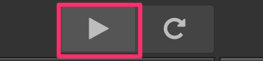
Manipulation of movement
A main character that can only jump foolishly up and down on the same spot is not very promising. Let us add keyboard input for the main character, using A and D to manipulate its jump direction. Below the setJumpAction method, add a new setInputControl method:
// Player.js
setJumpAction: function () {
//...
},
setInputControl: function () {
var self = this;
// add keyboard event listener
cc.eventManager.addListener({
event: cc.EventListener.KEYBOARD,
// When there is a key being pressed down, judge if it's the designated directional button and set up acceleration in the corresponding direction
onKeyPressed: function(keyCode, event) {
switch(keyCode) {
case cc.KEY.a:
self.accLeft = true;
self.accRight = false;
break;
case cc.KEY.d:
self.accLeft = false;
self.accRight = true;
break;
}
},
// when releasing the button, stop acceleration in this direction
onKeyReleased: function(keyCode, event) {
switch(keyCode) {
case cc.KEY.a:
self.accLeft = false;
break;
case cc.KEY.d:
self.accRight = false;
break;
}
}
}, self.node);
},
Then modify the onLoad method, into which we add the switch of accelerating to the left/right and the current horizontal speed of the main character. Then invoke the newly added setInputControl method. Start monitoring keyboard input after loading the scene:
// Player.js
onLoad: function () {
// initialize jump action
this.jumpAction = this.setJumpAction();
this.node.runAction(this.jumpAction);
// switch of acceleration direction
this.accLeft = false;
this.accRight = false;
// current horizontal speed of main character
this.xSpeed = 0;
// initialize keyboard input listener
this.setInputControl();
},
Finally, modify the content of the update method by adding settings for the acceleration, speed and the current position of the main character:
// Player.js
update: function (dt) {
// update speed of each frame according to the current acceleration direction
if (this.accLeft) {
this.xSpeed -= this.accel * dt;
} else if (this.accRight) {
this.xSpeed += this.accel * dt;
}
// restrict the movement speed of the main character to the maximum movement speed
if ( Math.abs(this.xSpeed) > this.maxMoveSpeed ) {
// if speed reaches its limit, use the max speed with current direction
this.xSpeed = this.maxMoveSpeed * this.xSpeed / Math.abs(this.xSpeed);
}
// update the position of the main character according to the current speed
this.node.x += this.xSpeed * dt;
},
update will be invoked once for each frame after loading the scene. We normally put the logic contents that need to be frequently calculated or timely updated here. In our game, after obtaining the acceleration direction by keyboard input, we need to calculate the speed and position of the main character in update for each frame.
After saving the script, you can brew a cup of tea and click preview to check the latest outcome. After opening the preview in your browser, click the game scene with the mouse (due to the restrictions of browsers, keyboard input can only be accepted after clicking the game scene) , then you can press the A and D buttons to manipulate the main character to move to the left/right!
Is the movement a little bit too slow? Does the main character not jump high enough? Hope to extend jump duration? No problem! All these can be adjusted at anytime. Just set up different property values for the Player component, then you can adjust the game at your will. Here is a set of settings for reference:
Jump Height: 150
Jump Duration: 0.3
Max Move Speed: 400
Accel: 1000
This set of property settings will make the main character as agile as possible. As for how to choose the values, it all depends on what style of game you want.
Making stars
The main character can jump freely now so we need to set up a goal for players. The stars will appear continuously in the scene and players need to manipulate the monster to touch the stars to collect points. The star touched by the main character will disappear and a new one will be immediately re-created at a random position.
Create Prefab
As for the nodes that need to be created repeatedly, we can save it as a Prefab resource, which can be a template for the dynamic generation of nodes. For more information about Prefab, please read Prefab.
Firstly, drag the assets/textures/star resource from the Assets panel into the scene. Anywhere in the Node Tree is fine. We only need the scene to be the operating platform for creating Prefab. After creation we will delete this node from the scene.
We don't need to modify the position of the stars or its render properties. But to make the stars disappear after being touched by the main character, we need to add a special component to the star. By the same method of adding the Player script, add a JavaScript script named Star to assets/scripts/ (in the Properties panel of the star, select Add component and then Add custom component and then Star).

Next, double click this script to start editing. Only one property is needed for the star component to stipulate the distance for collecting points by the main character. Modify properties and add the following content:
// Star.js
properties: {
// When the distance between the star and main character is less than this value, collection of the point will be completed
pickRadius: 0
},
After saving the script, add this script to the newly created star node. Then set up the property value of Pick Radius in the Properties panel as 60:

The settings needed by Star Prefab are now finished. Now drag the star node from the Node Tree and drop it into the assets folder in the Assets panel. This should generate a Prefab resource named star, as shown below.

Now the star node can be deleted from the scene. We can dynamically use the Prefab resource of stars in the script to generate stars.
Adding game control script
The generation of stars is a part of the game's main logic. Therefore we need to add a script named Game and make it the script of the game's main logic. Logic concerning scoring, failure and restarting will be added to this script later.
Add a new Game script inside the assets/scripts folder (next to Star and Player). Double click to open the script. First, add the properties needed for generating stars:
// Game.js
properties: {
// this property quotes the PreFab resource of stars
starPrefab: {
default: null,
type: cc.Prefab
},
// the random scale of disappearing time for stars
maxStarDuration: 0,
minStarDuration: 0,
// ground node for confirming the height of the generated star's position
ground: {
default: null,
type: cc.Node
},
// player node for obtaining the jump height of the main character and controlling the movement switch of the main character
player: {
default: null,
type: cc.Node
}
},
After saving the script, add the Game component to the Canvas node in the Node Tree (after choosing the Canvas node, drag the script to the Properties panel or click the Add component button in the Properties panel and choose Game in Add Custom Component).
Next, drag the star Prefab resource from the Assets panel into the Star Prefab property of the newly created Game component. This is the first time we have set up a quotation for the property. Only when setting type as quote type when declaring a property (such as the cc.Prefab type written here) can an asset or a node be dragged to the property.)
Then, drag the ground and Player nodes from the Node Tree to properties of the same name in the component, to finish the node quotation.
Finally, set the values of the Min Star Duration and Max Star Duration properties as 3 and 5. Later when generating stars, we will choose a random value between these two values, for the duration of each star.
Generate stars at a random position
Next, we will continue to modify the Game script by adding the logic of generating stars and putting it after the onLoad method:
// Game.js
onLoad: function () {
// obtain the anchor point of ground level on the y axis
this.groundY = this.ground.y + this.ground.height/2; // this.ground.top may also work
// generate a new star
this.spawnNewStar();
},
spawnNewStar: function() {
// generate a new node in the scene with a preset template
var newStar = cc.instantiate(this.starPrefab);
// put the newly added node under the Canvas node
this.node.addChild(newStar);
// set up a random position for the star
newStar.setPosition(this.getNewStarPosition());
},
getNewStarPosition: function () {
var randX = 0;
// According to the position of the ground level and the main character's jump height, randomly obtain an anchor point of the star on the y axis
var randY = this.groundY + cc.random0To1() * this.player.getComponent('Player').jumpHeight + 50;
// according to the width of the screen, randomly obtain an anchor point of star on the x axis
var maxX = this.node.width/2;
randX = cc.randomMinus1To1() * maxX;
// return to the anchor point of the star
return cc.p(randX, randY);
}
After saving the script, click the preview button. Then in the browser you will see that a star is dynamically generated after the game is started! By the same method, you can dynamically generate any preset node with a Prefab template in the game.
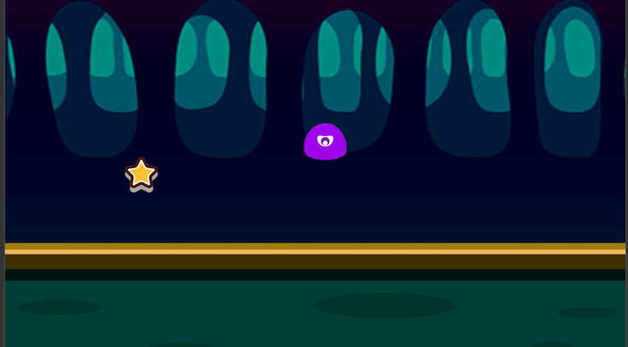
Adding the action of the main character's touching and collecting of stars
Now we will add the action logic of the main character's collecting of stars. The essential point here lies in the fact that the star needs to obtain the position of the main character's node at any time to judge if the distance between them is shorter than the collectable distance. How do we obtain the quotation of the main character's node? Don't forget that we have done two things before:
- There is a property named
playerin theGamecomponent, which saved the quotation of the main character's node. - Each star is dynamically generated in the
Gamescript.
Therefore, we only need to deliver the concrete example in the Game component into a star and save it after the concrete example of the Star node is generated in the Game script. Then we can visit the main character's node by game.player at anytime. Let's open the Game script, and add the following code to the end of the spawnNewStar method:
// Game.js
spawnNewStar: function() {
// ...
// deliver the concrete example of the Game component into the star component
newStar.getComponent('Star').game = this;
},
Open the Star script after saving, now we can use the player node quoted in the Game component to judge the distance. Add the methods named getPlayerDistance and onPicked and put them below the onLoad method:
// Star.js
getPlayerDistance: function () {
// judge the distance according to the position of the player node
var playerPos = this.game.player.getPosition();
// calculate the distance between two nodes according to their positions
var dist = cc.pDistance(this.node.position, playerPos);
return dist;
},
onPicked: function() {
// When the stars are being collected, invoke the interface in the Game script to generate a new star
this.game.spawnNewStar();
// then destroy the current star's node
this.node.destroy();
},
Then add the judging distance for each frame to the update method. If the distance is shorter than the collectable distance set by the pickRadius property, implement collecting behavior:
// Star.js
update: function (dt) {
// judge if the distance between the star and main character is shorter than the collecting distance for each frame
if (this.getPlayerDistance() < this.pickRadius) {
// invoke collecting behavior
this.onPicked();
return;
}
},
Save the script, then preview and test again. You will see that when the main character gets close to the star, the star will disappear and a new one will be generated at a random position!
Adding score
The little monster makes a great effort to collect the stars. But how come it receives no reward? Now, let's add the logic and display of scoring when collecting stars.
Adding a score label（Label）
The score will start from 0 when the game is started. 1 point will be added for 1 star collected. To display the score, we should first create a Label node. Choose the Canvas node in the Node Tree, right click and choose Create -> Create Renderer Nodes -> Node With Label. A new Label node will be created under Canvas, and it will be located at the bottom. Next we will use the following steps to set up this Label node:
- Change the node's name to
score. - Select the
scorenode, and set the X,Y of thepositionproperty to(0, 180). - Edit the
Stringproperty of the Label component and inputScore: 0. - Set the
Font Sizeproperty of the Label component to50. - Drag the
assets/mikado_outline_shadowbitmap font resource from the Assets panel（pay attention! the icon is）into the Fontproperty of the Label component, to change the font used to render the score.
The completed effect is as illustrated below (don't worry about the Size):
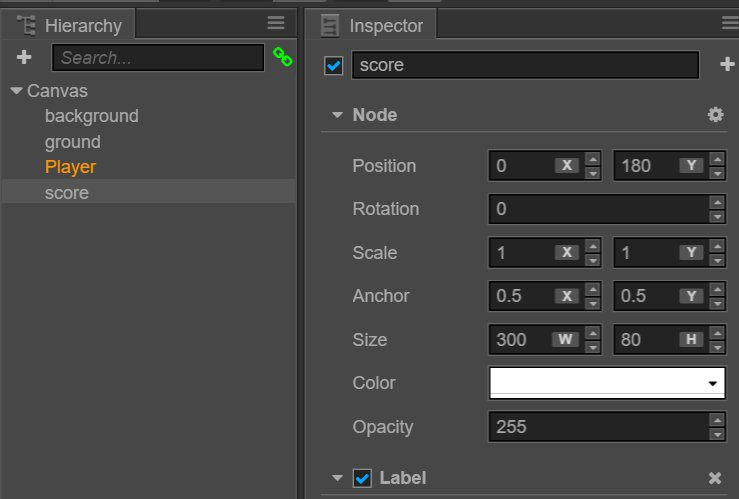
Adding scoring logic to Game script
We will put the logic of scoring and updating the score display in the Game script. Open the Game script to start editing. First, add a reference property of the score display Label to the end of the properties block:
// Game.js
properties: {
// ...
// quotation of score label
scoreDisplay: {
default: null,
type: cc.Label
}
},
Next, add the initialization of variables for scoring in the onLoad method:
// Game.js
onLoad: function () {
// ...
// initialize scoring
this.score = 0;
},
Then add a new method named gainScore to the back of the update method:
// Game.js
gainScore: function () {
this.score += 1;
// update the words of the scoreDisplay Label
this.scoreDisplay.string = 'Score: ' + this.score.toString();
},
Invoke the scoring logic of the Game in Star script
Open the Star script after saving the Game script. Add the invoking of gainScore to the onPicked method:
// Star.js
onPicked: function() {
// when the stars are being collected, invoke the interface in the Game script to generate a new star
this.game.spawnNewStar();
// invoke the scoring method of the Game script
this.game.gainScore();
// then destroy the current star's node
this.node.destroy();
},
Preview after saving. You will see that when collecting stars, the scores displayed at the top of screen will increase now!
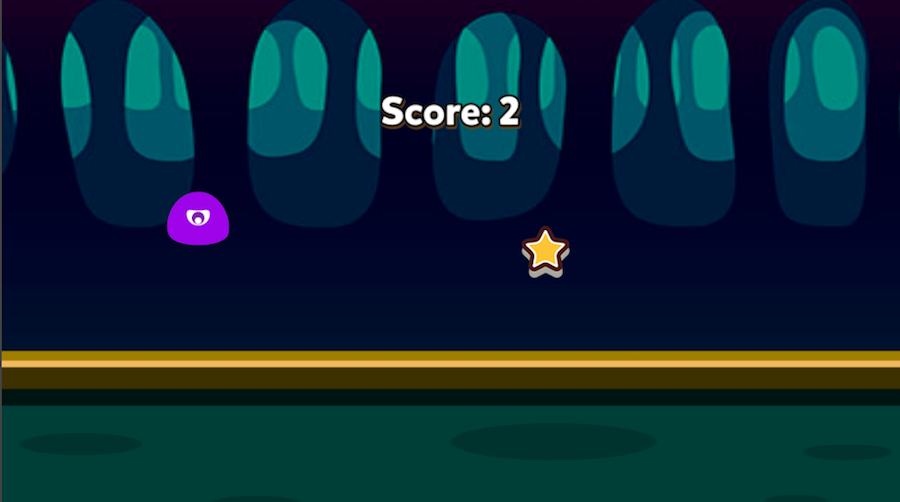
Judgement of failure and restarting
Now our game has taken shape. But no matter how many scores one may get, a game without the possibility of failure won't give players any fulfillment. Now let's add the action of the stars' regular disappearance. And if all the stars disappear, the game will be viewed as failed. In other words, players need to finish collecting the star before the star disappears and repeat this procedure unceasingly to finish the loop of the play method.
Adding the logic of disappearing in a limited time to the star
Open the Game script, and add the variable declaration needed for counting time before invoking spawnNewStar of the onLoad method:
// Game.js
onLoad: function () {
// ...
// initialize timer
this.timer = 0;
this.starDuration = 0;
// generate a new star
this.spawnNewStar();
// initialize scoring
this.score = 0;
},
Then add the logic of resetting the timer to the end of the spawnNewStar method, in which this.minStarDuration and this.maxStarDuration are properties of the Game component that was declared at the beginning. They are used to stipulate the random scale of star duration:
// Game.js
spawnNewStar: function() {
// ...
// reset timer, randomly choose a value according the scale of star duration
this.starDuration = this.minStarDuration + cc.random0To1() * (this.maxStarDuration - this.minStarDuration);
this.timer = 0;
},
Add the logic of updating the timer and judgement of exceeding the duration to the update method:
// Game.js
update: function (dt) {
// update timer for each frame, when a new star is not generated after exceeding duration
// invoke the logic of game failure
if (this.timer > this.starDuration) {
this.gameOver();
return;
}
this.timer += dt;
},
In the end, add the gameOver method. Reload the scene when failure occurs.
// Game.js
gameOver: function () {
this.player.stopAllActions(); // stop the jumping action of the player node
cc.director.loadScene('game');
}
Modification of the Game script is now finished. Save the script and open the Star script, because we need to add a simple visual prompt effect to the star that is about to disappear. Add the following code to the end of the update method:
// Star.js
update: function() {
// ...
// update the transparency of the star according to the timer in the Game script
var opacityRatio = 1 - this.game.timer/this.game.starDuration;
var minOpacity = 50;
this.node.opacity = minOpacity + Math.floor(opacityRatio * (255 - minOpacity));
}
Save the Star script, and the logic of this game's play method will now be completely finished. Now click the preview button, we will see a qualified game with a core play method, incentive mechanism and failure mechanism in the browser.
Adding sound effects
Although lots of people will ignore sound when playing smartphone games, for the completeness of the workflow presented in this tutorial, we still have to supplement the task of adding sound effects.
Jumping sound effect
Firstly, add the jumping sound effect. Open the Player script and add the jumpAudio property that quotes the sound document resource:
// Player.js
properties: {
// ...
// jumping sound effect resource
jumpAudio: {
default: null,
url: cc.AudioClip
},
},
Then rewrite the setJumpAction method, insert the callback of playing the sound effect and play the sound by adding the playJumpSound method:
// Player.js
setJumpAction: function () {
// jump up
var jumpUp = cc.moveBy(this.jumpDuration, cc.p(0, this.jumpHeight)).easing(cc.easeCubicActionOut());
// jump down
var jumpDown = cc.moveBy(this.jumpDuration, cc.p(0, -this.jumpHeight)).easing(cc.easeCubicActionIn());
// add a callback function to invoke other defined methods after the action is finished
var callback = cc.callFunc(this.playJumpSound, this);
// repeat unceasingly, and invoke callback to play sound after landing each time
return cc.repeatForever(cc.sequence(jumpUp, jumpDown, callback));
},
playJumpSound: function () {
// invoke sound engine to play the sound
cc.audioEngine.playEffect(this.jumpAudio, false);
},
Scoring sound effect
After saving the Player script, open the Game script to add the scoring sound effect. Firstly, we still add a property to properties to quote the sound document resource:
// Game.js
properties: {
// ...
// scoring sound effect resource
scoreAudio: {
default: null,
url: cc.AudioClip
}
},
Then insert the code of playing the sound into the gainScore method:
// Game.js
gainScore: function () {
this.score += 1;
// update the words of the scoreDisplay Label
this.scoreDisplay.string = 'Score: ' + this.score.toString();
// play the scoring sound effect
cc.audioEngine.playEffect(this.scoreAudio, false);
},
Save the script. Go back to the Node Tree, choose the Player node, and drag the assets/audio/jump resource from the Assets panel to the Jump Audio property of the Player component.
Then choose the Canvas node, drag the assets/audio/score resource to the Score Audio property of the Game component.
Now it's done! The scene hierarchy of the completed form and properties of each key component are as follows:
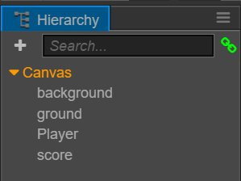  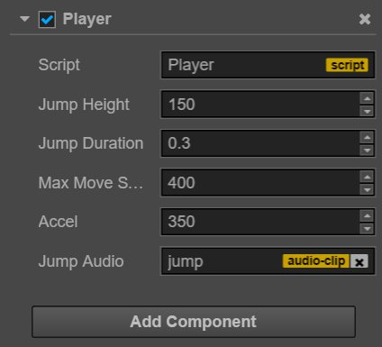
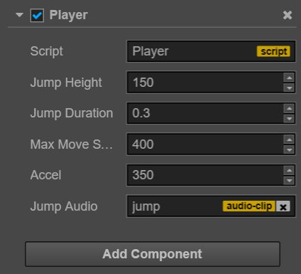
Now we can fully enjoy the newly created game. How many scores can you get? Don't forget that you can modify game parameters like movement control and star duration, etc. in the Player and Game components at anytime to quickly adjust the game's degree of difficulty. The scene needs to be saved after modifications of component properties. Only the saved values can be recorded.
Summary
Congratulations! You have finished the first game created by Cocos Creator. We hope this quick start tutorial for beginners can help you understand the basic concepts and workflows in the game development process of Cocos Creator. If you are not interested in writing and learning script programming, you can directly copy and paste the completed script from the completed project.
Next, you can continue to perfect this game. The following are some recommended improving methods:
- Add a simple start menu, display a start button when the game starts running. Only after clicking the button will the game start
- Add a simple menu interface for the failure of the game. Only after clicking the button will the game restart after failure
- Restrict the movement of the main character to the window's boundaries
- Add more exquisite animation performance to the jumping action of the main character
- Add a countdown progress bar to the state when a star disappears
- Add more gorgeous effects when collecting stars
- Add input controls for touch screen devices
For editions that have been improved in all the above aspects, you can download evolution edition project for reference and learning, which will not be discussed in detail here.
Moreover, if you want to release the completed game on a server to share with your friends, you can read the content of the Preview Build section.
Today's tutorial ends here. You can immediately start creating your second Cocos Creator game or continue reading this guide. For any questions on this quick start tutorial, you can send feedback on Warehouse of this tutorial on Github.
According to your experience of using the engine, you can continue to read: